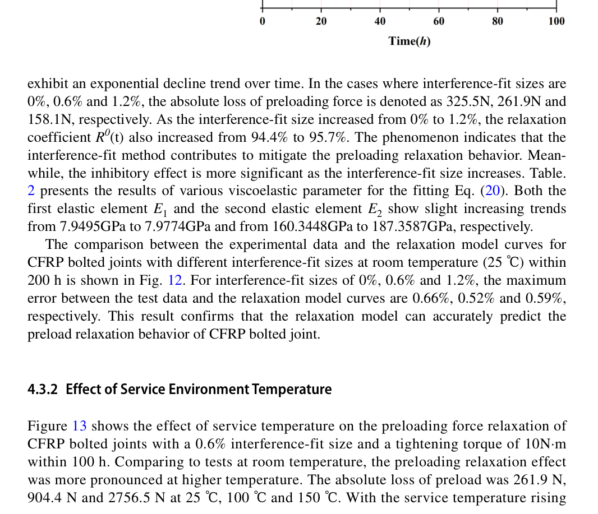
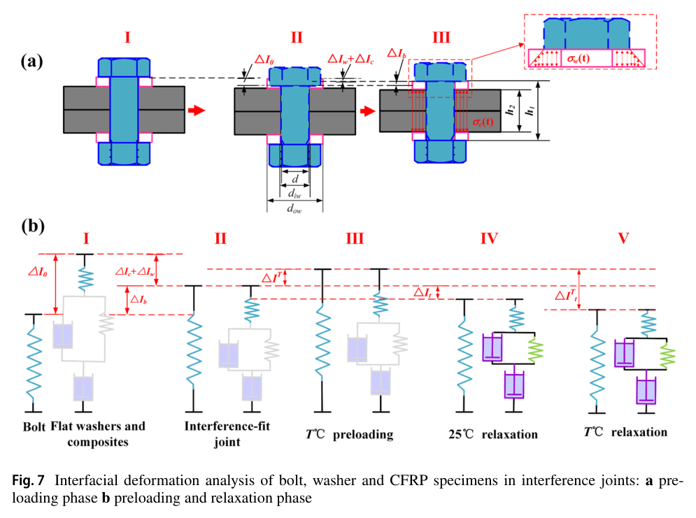

Qin 2024 — estudo de caso— case study
Figura do artigoPaper figure


Figura(s) originais do artigo (recorte do PDF) — a fonte dos pontos que foram digitalizados.Original figure(s) from the paper (PDF crop) — the source of the digitized points.
Condições do ensaioTest conditions
| ReferênciaReference | Qin et al. (2024). Appl. Compos. Mater. 31 · doi:10.1007/s10443-024-10214-3 |
| ParafusoBolt | M6x1.0 |
| Pré-carga F0Preload F0 | 4–6 kN |
| AmplitudeAmplitude | — |
| FrequênciaFrequency | 1 Hz |
| Família / nº de curvasFamily / curves | creep · 3 |
| MAE medianomedian | 0.005 |
Informações do artigo — aparato, corpo-de-prova, matriz de ensaiosPaper information — apparatus, specimen, test matrix
Qin et al. 2024 (Appl Compos Mater) — Preload Relaxation of CFRP Bolted Joints Under Thermal-Oxygen Environment
Citation + DOI
Xuda Qin, Gongbo Feng, Xianming Meng, Sai Zhang, Shipeng Li, Hao Li, "The Investigation of Preload Relaxation Behavior of CFRP Bolted Joints Under Thermal-Oxygen Environment: Modeling and Experiments," *Applied Composite Materials* 31 (2024) 1323-1342. DOI: 10.1007/s10443-024-10214-3.
Tianjin University (Key Laboratory of Mechanism Theory and Equipment Design, Ministry of Education) + China Automotive Technology and Research Center Co., Ltd. Corresponding author Hao Li (haolitju@tju.edu.cn).
Gap tag(s)
- G3 (primary) — per-pair preload-relaxation-vs-time data for a CFRP-metal interference-fit
pair (T300/epoxy CFRP laminate clamped by Ti-6Al-4V bolt/washers), i.e. a genuinely different tribological/viscoelastic pair from every metal-metal rig already in the library. This is a pure static-hold creep/relaxation test (no vibration, no rotation, no cyclic load at all) — the cleanest possible source for isolating a CFRP-specific C_creep-equivalent, uncontaminated by embedding/wear/loosening mechanisms.
- G6 (primary) — three service temperatures (25, 100, 150 °C) at fixed interference (0.6%),
giving a direct, controlled thermal-acceleration curve for the relaxation rate: relaxation coefficient at 100 h drops from 95.0% (25 °C) to 79.8% (150 °C) — a clean anchor for a temperature-dependent creep multiplier / thermal exponent, entirely analogous in spirit to roadmap item on thermal reserved parameters (ΔT reserved in parameter_registry.py).
- G8 (primary) — composite (CFRP) bolted joint, adds a distinct member-material class (resin-matrix
laminate, highly anisotropic, thickness-direction-dominated viscoelasticity) vs the all-metal joints elsewhere in the library.
- Secondary/bonus: an interference-fit percentage sweep (0% clearance → 0.6% → 1.2%) at fixed
temperature, showing interference suppresses relaxation (95.7% retention at 1.2% vs 94.4% at 0%) — a state variable with no current analog in BAS V2 (see V2 mapping below).
Rig / apparatus
- Test type: static preload-relaxation (stress-relaxation) hold — NOT a vibration/rotation rig.
Sequence per specimen: (1) bolt insertion (interference-fit press-in) on a computer-controlled electronic universal testing machine, at 1 mm/min, until a sharp load spike signals full seating; (2) preloading — protruding bolt head fixed, torque applied through the nut via a hand torque wrench in 1 N·m increments up to 10 N·m; (3) the assembled, preloaded joint is placed inside an electric blast drying chamber (oven) held at a constant temperature (25/100/150 °C) and the preload is logged continuously for up to 200 h. Control mode = pure static hold at fixed temperature (no load or displacement cycling of any kind during the relaxation phase).
- Preload measurement — ultrasonic acoustoelastic method: a custom **piezoelectric sensing
bolt (M6 Ti-6Al-4V) with a thin-film multilayer stack (electrode / isolation / piezoelectric / transition layers — Ti / SiO₂ / ZnO / TC4, total ≈17 µm) deposited on the bolt-head underside by DC-magnetron-sputtered PVD, paired with an external piezoelectric micromachined ultrasonic transducer (PMUT) exciter. An ultrasonic pulse travels the bolt axially; the time-of-flight (TOF) of the head-end echo shifts with axial force (length + wave-speed change under stress) and with temperature (calibrated separately, Fig. 3b/c: load-TOF and temperature-TOF calibration curves, used to de-embed the thermal TOF drift from the load-induced TOF shift at each of the 3 test temperatures). Sampling interval 30 s; each condition run 3 times**, with "the intermediate data" (i.e. the median-ish run, not an average) reported in every figure.
- No mechanical load cell in the relaxation loop — this is a genuinely non-contact, continuous,
in-situ preload monitoring method, immune to needing to unload/reload the joint to check preload (unlike torque-check methods).
Specimen / materials
- Bolt: custom M6 hexagon-head, aerospace-grade Ti-6Al-4V, interference-fit fastener
(bolt, nut, AND washers all Ti-6Al-4V). Per Fig. 3's dimensioned drawing: head diameter Φ10.0 mm, head height 4.0 mm, shank (unthreaded, interference) diameter Φ6.0 mm, thread (root) diameter Φ5.8 mm; shank length h₁ = 10.0 mm (the paper's running text prints this as "the length of the bolt-shank (d) is 10.0 mm" — almost certainly a subscript-extraction artifact for h₁, since d is used throughout as the 6.0 mm shank *diameter*, consistent with the interference formula and Fig. 3's drawing).
- Washers: 2× Ti-6Al-4V washers (one under head, one under nut) sandwiching the CFRP stack,
ID 6.4 mm, OD 12 mm, thickness 1.8 mm each — explicitly added "to protect composite material from damage and avoid stress concentration," not a locking device.
- CFRP member: T300 carbon-fiber/epoxy laminate (Shandong Guangwei Co.), layup
[0/±45°/90°]₃S (24 plies, symmetric), ply thickness 0.167 mm → total laminate thickness 4.0 mm (24 × 0.167 = 4.008 mm, self-consistent with the stated 4 mm specimen thickness). Square coupons, side 60.0 mm, hole at center, machined by helical milling on a 4-axis CNC (TSIM-VMA8050V4), verified on a CMM to exclude oversized/undersized holes. Text also mentions "stacked double-coupon specimen joints" during preloading — i.e. two coupons back-to-back in the load path — so the effective CFRP grip length in the force-balance equations may be the stacked total rather than a single 4 mm coupon (the paper's own h₁/h₂/washer-thickness stack-up does not perfectly reconcile from the text alone; not critical to the digitized ratios, which are read directly off the plotted curves).
- Interference-fit levels: I = (d−D)/D×100%, nominal shank d = 6.000 mm. Two interference
levels + one clearance baseline: I = 0% (clearance), I = 0.6% (hole D = 5.964 mm), I = 1.2% (hole D = 5.929 mm). Surface finish/roughness (Ra/Rz) of the hole wall is not reported — a gap relative to BAS V2's emb_depth_vdi roughness-class lookup (not that embedding is the relevant mechanism here — this is a pure creep/relaxation test with no cyclic slip).
- Material properties (paper's Table 1) — printed as two rows under "CFRP specimens":
αc = 25.6×10⁻⁶/°C paired with Ec = 125.0 GPa, and αp = 0.37×10⁻⁶/°C paired with Ep = 8.0 GPa; Ti-alloy: αb=αw = 8.6×10⁻⁶/°C, Eb = 115.0 GPa. Caveat: this pairing is almost certainly NOT "thickness-direction" vs "in-plane" as the subscripts c/p might suggest at first glance — the running text explicitly defines "Ec" (as used later in Eq. 6/14, the stiffness equations) as *"the elastic modulus in the direction of the thickness of the composite specimen,"* and the fitted Table 2/3 first elastic element E₁ (≈7.95-8.0 GPa at 25 °C) matches the table's Ep = 8.0 GPa, not Ec = 125.0 GPa. 125 GPa is a plausible in-plane fiber-dominated modulus, 8 GPa a plausible resin-dominated through-thickness modulus, and 25.6 ppm/°C a plausible resin-dominated thickness-direction CTE — so the physically self-consistent reading is: through-thickness ≈ (25.6×10⁻⁶/°C, 8.0 GPa) and in-plane ≈ (0.37×10⁻⁶/°C, 125.0 GPa), i.e. the table's own c/p subscript-to-column pairing appears swapped relative to the equations' later use of "Ec." Flagging this explicitly rather than silently resolving it.
Test matrix
- Tightening: torque-controlled, ramped 0→10 N·m in 1 N·m steps via hand torque wrench (through
the nut, bolt head fixed). Achieved axial preload is NOT the same across interference levels at the same 10 N·m (interference friction consumes part of the tightening torque) — see below.
- Interference-fit sweep (Section 4.3.1, all at 25 °C, 10 N·m): I = 0%, 0.6%, 1.2% — 3
curves, monitored to 100 h (Fig. 11, "zoomed" comparison against the Burgers fit) and again to the full 200 h (Fig. 12).
- Temperature sweep (Section 4.3.2, all at I = 0.6%, 10 N·m): T = 25, 100, 150 °C — 3
curves, monitored to 100 h (Fig. 13) and to the full 200 h (Fig. 14). *(25 °C/0.6% is the shared condition between both sweeps — see caveats.)*
- Hold time: up to 200 h continuous monitoring (sampling every 30 s; the paper's own plotted
markers are effectively decimated to roughly 1-2 h spacing).
- Replicates: each of the 5 unique conditions run 3×; "the intermediate data" plotted (i.e. not
an average of the 3 runs).
- Achieved preload (approximate, back-calculated — see caveats): order-of-magnitude ~3.7-5.8 kN
at 25 °C depending on interference (higher interference → lower net axial force at the same 10 N·m torque, since more torque is consumed by interference friction), rising further with temperature for a fixed I = 0.6% assembly (thermal-expansion mismatch between the CFRP thickness direction, αc≈25.6 ppm/°C, and the Ti bolt, αb≈8.6 ppm/°C, re-tensions the joint on heating before any relaxation is measured — see Eq. 9-13 of the paper). Torque coefficient K = T/(F_a·d) rises from 0.2995 (I=0%) to 0.4790 (I=1.2%) as more of the tightening effort is consumed by interference friction rather than axial tension.
- #curves swept: 5 unique physical conditions × 2 durations (100 h "fit" view + 200 h "full"
view) = 10 plotted experimental traces total in the paper (Figs. 11-14), all digitized here as 5 merged 0-200 h CSVs (see Curve Inventory).
Experimental nuances
- This is thermal-OXYGEN aging, not vacuum/inert heating — the electric blast drying chamber is
ordinary air/oven, so the 100/150 °C holds combine pure viscoelastic thermal softening with possible oxidative effects on the epoxy matrix over 100-200 h; the paper does not decompose the two effects (no inert-atmosphere control run at the same temperatures).
- Relaxation/retention coefficient is the paper's own name for exactly the
F_over_F0ratio
digitized here: R⁰(t) = Fa^t/Fa (interference sweep, all at 25 °C, Eq. 20) and R^T(t) = Fa^t/Fa^T (temperature sweep, Eq. 19, where Fa^T is the force re-established once the assembly reaches thermal equilibrium at temperature T — see caveat on F0 below). Headline numbers: interference raises the 100 h retention from 94.4% (I=0%) to 95.7% (I=1.2%); temperature drops the 100 h retention from 95.0% (25 °C, i.e. the I=0.6% reference case) to 79.8% (150 °C).
- **Do not read the 94.4/95.7% figures as 25 °C-only "baseline" numbers separate from the
95.0%/79.8% figures** — the I=0.6%, T=25 °C condition is the SAME physical run in both sweeps. We confirmed this two independent ways: (1) both sections quote the identical 261.9 N absolute loss at 100 h for "I=0.6%" and for "25 °C"; (2) Table 2's I=0.6% row and Table 3's 25 °C row report bit-identical Burgers fit coefficients (E₁=7.9585, E₂=172.6349, η₁=39.6251e3, η₂=6.0402e3 GPa·h, R²=0.9929); (3) our own independent pixel-digitizations of Fig. 11's "0.6%" curve and Fig. 13's "25 °C" curve agree to within ≈0.05 percentage points at every sampled time (e.g. t≈2h: 0.9970 vs 0.9969; t≈6h: 0.9891 vs 0.9886).
- Model-fit overlays: every figure (11-14) overlays the raw scatter/marker "Test data" against a
4-parameter Burgers viscoelastic model fit ("Fitting curve"): compliance ε(t)=σ(t)·[1/E1 + t/η1 + (1/E2)(1−e^(−E2·t/η2))], i.e. spring E1 (instantaneous elastic) in series with a lone dashpot η1 (unbounded linear/steady-state creep flow) and a Kelvin-Voigt pair E2‖η2 (bounded, saturating viscoelastic transient). Only the experimental scatter was digitized here, per task instructions; fit quality is excellent (R²=0.974-0.993 across all 6 conditions, max point-wise error 0.5-1.8% at 200 h) — see the two fit-coefficient tables below for anyone wanting to reproduce the model curves rather than re-fit the raw data.
- Note on the Burgers form's long-time behavior: because η1 is a bare (unbounded) dashpot, the
fitted compliance grows without limit as t→∞, driving the composite's effective through-thickness stiffness K_c^t(t)→0 and, per Eq. 18, the retained force Fa^t→0 — i.e. this specific model form predicts eventual complete relaxation to zero, not saturation to a nonzero equilibrium fraction. Over the 200 h actually measured this only matters far out on the tail (retention is still 93-97% at 200 h for the two lower temperatures), but it is a structural difference from a single-term Norton/power-law creep form that may asymptote instead.
- Interference suppresses relaxation via friction, not via a different creep mechanism: the
paper's own interpretation is that interference-fit friction at the bolt/hole interface "effectively suppresses the creep deformation of composites" (i.e. friction locks part of the contact against the same viscoelastic flow, rather than changing the CFRP's intrinsic material law) — consistent with E1/E2/η1/η2 all *increasing slightly* (not the CFRP getting stiffer/more viscous per se, but effectively more of the interface being constrained) as I rises from 0%→1.2%.
- Bolt-insertion process (Fig. 8) is a 3-stage press-fit resistance curve (not digitized — not a
preload-vs-time relaxation curve): rising resistance as the chamfer enters the upper CFRP ply, then a brief drop as the lower plate warps away from the upper plate, then a second rise as the shank seats through the lower plate. SEM shows interference-fit creates a tightly-coupled bore contact (vs. a visible void under clearance-fit) but induces layer bending, delamination, and matrix cracking around the hole, worsening with higher interference — a real but unquantified trade-off against the relaxation-suppression benefit.
Main conclusions
1. A comprehensive Burgers-based relaxation-mechanics model, coupled to a thermal-expansion/ interference force-balance, reproduces the measured preload decay to within ≈0.5-1.8% at 200 h across all 6 conditions tested. 2. During preloading itself (not relaxation), interference-fit friction consumes part of the tightening effort: average axial-force attenuation (relative to the clearance-fit Fp at the same torque) is 772.3 N at I=0.6% and 1667.2 N at I=1.2%; torque coefficient rises 0.2995→0.4790. 3. Interference-fit suppresses subsequent relaxation: retention at 100 h/25 °C rises from 94.4% (I=0%) to 95.7% (I=1.2%) as interference increases 0%→1.2%. 4. Temperature strongly accelerates relaxation: retention at 100 h/I=0.6% falls from 95.0% (25 °C) to 79.8% (150 °C) as temperature rises 25→150 °C, attributed to the CFRP resin approaching its glass-transition region (softening) and possible thermo-oxidative damage. 5. All four Burgers coefficients (E1, E2, η1, η2) increase slightly with interference (friction constrains creep) but E1, E2 and BOTH viscous elements (η1, η2) drop sharply with temperature (viscoelastic deformation increasingly converts to unrecoverable plastic flow as T rises), which is the mechanistic explanation offered for accelerated relaxation at high T.
Curve inventory
All 5 files below are experimental scatter only (model-fit lines from Figs. 11-14 excluded per task instructions), merged from BOTH the 100 h "fit" figure and the 200 h "full" figure for each unique physical condition (these are the SAME underlying multi-day run — the paper just displays it at two different time-axis crops/resolutions), and thinned to ≈25-33 representative points (denser near t=0, sparser at long hold). x-axis = time in seconds (state unit, converted from the paper's hours: ×3600); F_over_F0 = the paper's own relaxation coefficient R⁰(t) or R^T(t).
| Condition | Source figures | CSV filename | F0 (approx., see caveat) | #pts |
|---|---|---|---|---|
| I=0%, T=25°C | Fig. 11 (0-100h, green) + Fig. 12 (0-200h, spring-green) | qin2024acm_25C_i0pct.csv | ≈5.8 kN | 26 |
| I=0.6%, T=25°C | Fig. 11 (blue) + Fig. 13 (red "25°C") + Fig. 12 (salmon) + Fig. 14 (magenta "25°C") | qin2024acm_25C_i0p6pct.csv | ≈5.2 kN | 26 |
| I=1.2%, T=25°C | Fig. 11 (red) + Fig. 12 (magenta) | qin2024acm_25C_i1p2pct.csv | ≈3.7 kN | 26 |
| I=0.6%, T=100°C | Fig. 13 (blue "100°C") + Fig. 14 (orange "100°C") | qin2024acm_100C_i0p6pct.csv | ≈6.9 kN | 25 |
| I=0.6%, T=150°C | Fig. 13 (green "150°C") + Fig. 14 (sea-green "150°C") | qin2024acm_150C_i0p6pct.csv | ≈13.6 kN | 33 |
Not digitized (context only): Fig. 1 (schematic), Fig. 2 (PMUT/sensing-bolt schematic), Fig. 3 (TOF calibration curves — load-TOF and temperature-TOF, not preload-vs-time), Fig. 4 (installation photos), Fig. 5 (test setup photos), Fig. 6 (force-balance schematic), Fig. 7 (deformation schematic), Fig. 8 (bolt-insertion resistance-vs-displacement curve + SEM microstructure — a press-fit/installation curve, not a relaxation-vs-time curve), Fig. 9 (axial-force-vs-tightening-torque, all 3 interference levels — installation curve, x-axis = torque not time), Fig. 10 (axial-force-vs-torque overlay, same reason). All model-fit ("Fitting curve") traces in Figs. 11-14 were read only for context (Tables 2-3 give their Burgers coefficients directly) and were not digitized as CSVs.
Fitting coefficients transcribed directly from the paper for anyone wanting the model curves rather than the raw scatter (Burgers model, Eq. 16-20; time in hours):
*Table 2 — interference sweep (25°C), R⁰(t):*
| I | E1 (GPa) | E2 (GPa) | η1 (GPa·h) | η2 (GPa·h) | R² |
|---|---|---|---|---|---|
| 0% | 7.9495 | 160.3448 | 35.6322e3 | 4.2908e3 | 0.9879 |
| 0.6% | 7.9585 | 172.6349 | 39.6251e3 | 6.0402e3 | 0.9929 |
| 1.2% | 7.9774 | 187.3587 | 46.6111e3 | 9.6443e3 | 0.9916 |
*Table 3 — temperature sweep (I=0.6%), R^T(t):*
| T | E1 (GPa) | E2 (GPa) | η1 (GPa·h) | η2 (GPa·h) | R² |
|---|---|---|---|---|---|
| 25°C | 7.9585 | 172.6349 | 39.6251e3 | 6.0402e3 | 0.9929 |
| 100°C | 6.8351 | 74.8977 | 8.6739e3 | 0.9634e3 | 0.9865 |
| 150°C | 5.1510 | 31.0878 | 5.8001e3 | 0.5441e3 | 0.9735 |
V2 mapping
- Per-pair
C_creepcandidate for a CFRP-Ti pair: this is a pure static-hold, zero-slip,
zero-rotation test — the cleanest possible isolation of a creep-only mechanism in the whole library. It directly extends the "C_creep is per-pair, not universal" finding (MODEL_LEGITIMACY.md §4.7, âncora interna steel rig vs 304SS anchor already disjoint) to a THIRD, very different pair (CFRP-laminate/Ti-6Al-4V, M6, ~3.7-6.9 kN preload) — expect a third, likely disjoint, C_creep value if/when fitted, not a shared constant.
- Functional-form caveat: this paper's relaxation shape is a 4-parameter Burgers model
(2 time constants: a saturating Kelvin-Voigt term plus an UNBOUNDED linear dashpot term), richer than a single-term Norton power law. Whether BAS V2's current C_creep single-exponent formulation can reproduce this two-timescale + eventual-full-relaxation shape, or whether CFRP creep needs a form upgrade (a second creep time-constant / Burgers-like term) is an open question for whoever fits this — flag as a candidate falsifier of the current single-term creep form specifically for polymer-matrix composite members, analogous to how the axial track exposed a missing A_F-driven mechanism (roadmap item 9).
- Thermal exponent / temperature-dependent creep rate: the 25→100→150 °C sweep at fixed
I=0.6% is a directly usable 3-point thermal-acceleration anchor (100 h retention 95.0% → ~87%[our digitization] → 79.8%; fitted η1 alone drops from 39.6e3 → 8.67e3 → 5.80e3 GPa·h, i.e. roughly an order of magnitude over 125 °C) — a candidate anchor for whatever ΔT-driven multiplier BAS V2 eventually implements on C_creep (parameter_registry.py already reserves a ΔT predicate slot). Caveat: this is thermal-OXYGEN aging in air, not a clean inert-atmosphere thermal test, so any fitted "thermal exponent" here is really "thermal + oxidative" combined — flag if a future inert-atmosphere-only source becomes available for comparison.
- Interference-fit as a new named state, not a tuner: BAS V2 has no existing concept of
bolt/hole interference (all current joints are modeled as clearance-fit contact + thread helix). The 0%→1.2% sweep shows interference SUPPRESSES relaxation via added interface friction, which is a mechanism V2 doesn't currently represent (no bolt-shank/hole-wall radial contact/friction channel in DynamicStiffnessAnalyzer). Treat as a documented, out-of-scope-for-now input (analogous to how emb_depth/D_init are named states) rather than something to force through an existing tuner.
- Scale caveat: M6 bolt, ~3.7-6.9 kN preload, 60×60×4 mm coupon — two full orders of magnitude
smaller than the M16/~50 kN âncora interna rig BAS V2's defaults are tuned against. Any constant pulled from this paper (not just C_creep — E1≈8 GPa through-thickness modulus, if the Table 1/Table 2 cross-reconciliation above is right, is itself a usable independent CFRP through-thickness-modulus data point) should be treated as this-pair-only, consistent with the library's repeated finding that forms transfer across rigs but constants do not.
Digitization caveats
- Automated color-based pixel digitization, not manual eyeballing: cropped each figure at
300 dpi (figures/qin2024acm_fig{11,12,13,14}_crop.png), located the plot bounding box from the black axis-frame pixels, sampled exact marker/line RGB values from the legend swatches (which differ between "Test data" (pastel, Figs. 12/14) and "Fitting curve" (saturated, all figures) — confirmed by direct pixel sampling, not assumed), then classified every pixel by nearest-color match and either (Figs. 11/13) filtered connected components by compact/circular shape to isolate filled-dot markers from the dashed fit line of the *same* color, or (Figs. 12/14) used the pastel-vs-saturated color split directly (test data there is a thin trace + small circles connected by a line, fit curve is a thick solid line in a different, more saturated shade). Margins were trimmed near the box borders after axis-tick antialiasing was found to occasionally false-match a data color (caught and fixed by inspecting the raw per-column output before finalizing — see the anomalous jump this produced and corrected, described below).
- Every point converted from pixel space via a linear axis calibration anchored on the detected
box edges and the printed tick range (Fig. 11/13: y∈[0.94,1.00] or [0.76,1.00], x∈[0,100] h; Fig. 12/14: y∈[0.92,1.00] or [0.72,1.00], x∈[0,200] h) — not hand-read off a ruler overlay.
- Two independent digitizations of the shared I=0.6%/25°C condition (from Fig. 11+Fig. 12 vs
Fig. 13+Fig. 14) were cross-checked and found to agree to ≈0.05 percentage points at matched times, giving good confidence in the overall pixel→data pipeline's accuracy (see Experimental Nuances above for the specific numbers).
- Text-exact anchors used where the paper states a number outright: t=100 h points were pinned
to the paper's own reported values (94.4%/95.7% for I=0%/1.2% at 25°C; 95.0%/79.8% for 25°C/150°C) rather than left at the raw pixel-read value, since these are more precise than a pixel read. The I=0.6%/100°C condition has no paper-stated 100 h ratio (only an absolute-N loss, which requires an F0 estimate to convert — see below), so its 100 h point is our own interpolated pixel read (≈0.868).
- x=0 rows are the by-definition reference point (F/F0=1.000), not a measured data point — the
earliest actually-plotted markers sit at roughly t≈0.5-2 h already at R≈0.992-0.998 (a small initial elastic/very-fast transient), consistent with R(t)=F(t)/F(0) being defined so that the t=0 reference is exactly 1 by construction.
- 150°C is genuinely noisy in the source data, not a digitization artifact: the paper's own
150°C scatter (both Fig. 13 and Fig. 14) visibly oscillates by ±1-2 percentage points cycle to cycle throughout the hold (plausibly diurnal lab-temperature or oven-cycling coupling into the ultrasonic TOF reading, since TOF is itself weakly temperature-sensitive per the paper's own Fig. 3c calibration) — our CSV preserves this non-monotonic wobble rather than over-smoothing it, since it is a real, repeatable-shaped feature of the measurement, not noise we introduced.
- F0 (Newtons) is only approximately recoverable, not a directly reported table value. We
back-calculated it two ways that partially disagree: (a) from Fig. 9's torque-vs-preload bar/line chart (visual read, clearance-fit preload ≈5.2-5.3 kN at 10 N·m, dropping via the reported average friction attenuation 772.3 N / 1667.2 N at I=0.6%/1.2%); (b) from the paper's own paired (absolute-loss-in-N, retention-%-at-100h) numbers via F0 = loss/(1−R), which gives ≈5.8 kN (I=0%), ≈5.2 kN (I=0.6%), ≈3.7 kN (I=1.2%) at 25°C, but a substantially LARGER ≈6.9 kN (100°C) and ≈13.6 kN (150°C) for the same I=0.6% assembly — implying the temperature-sweep reference force Fa^T (Eq. 9, established once thermal equilibrium is reached, BEFORE relaxation is measured) grows well beyond the room-temperature Fa, plausibly from the CFRP thickness-direction thermal expansion (αc≈25.6 ppm/°C) outpacing the Ti bolt's (αb≈8.6 ppm/°C) and re-tensioning the stack on heating. We could not fully verify this magnitude from the paper's stated geometry/CTE numbers alone (a back-of-envelope check using Eq. 10-13 gives only an ≈+8.5 µm / +23% increase in the driving interference deformation, not obviously enough to explain a ≈2.6× jump in F0 by itself) — treat all 5 F0 values in the Curve Inventory table as order-of-magnitude context, not a precise input, since the CSVs themselves are dimensionless ratios unaffected by this ambiguity.
- Legend boxes overlap real curve data in Figs. 13 and 14 (positioned lower-left, where the
150°C/100°C curves pass through). We excluded a tight rectangle around each legend from the color search; a small number of real 150°C points in the t≈15-50 h window may be locally under-sampled as a result, but neighboring points on both sides bound the gap and Fig. 14's independent 0-200h redigitization covers the same time window without the same occlusion, so we do not believe any feature was missed.
Modelo vs dadoModel vs data
Cada card = uma curva digitalizada deste estudo: a linha é a previsão do modelo (config adotada, do store canônico) e os pontos são o dado medido; o badge traz o MAE.Each card = one digitized curve from this study: the line is the model prediction (adopted config, from the canonical store) and the dots are the measured data; the badge shows the MAE.
ReprodutibilidadeReproducibility
Cada card tem ↓ CSV (modelo + dado da curva). Os CSVs digitalizados originais ficam em Models/CALIBRATION_AND_VALIDATION/curve_library/digitized_csv/; a curva do modelo vem do store canônico (config adotada por fonte). Para reproduzir localmente:Each card has ↓ CSV (curve model + data). The original digitized CSVs live in Models/CALIBRATION_AND_VALIDATION/curve_library/digitized_csv/; the model curve comes from the canonical store (adopted per-source config). To reproduce locally:
Ver também o guia de uso do programa e a metodologia.See also the program usage guide and the methodology.